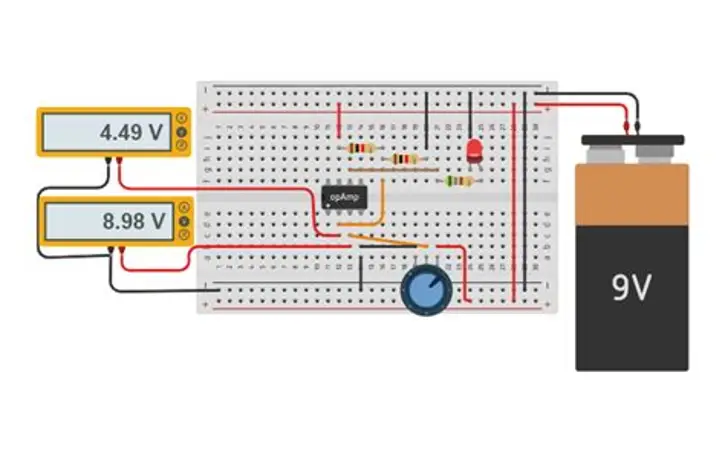
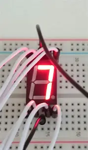
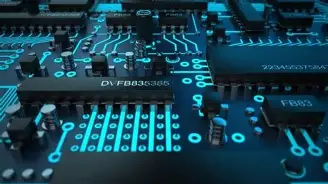
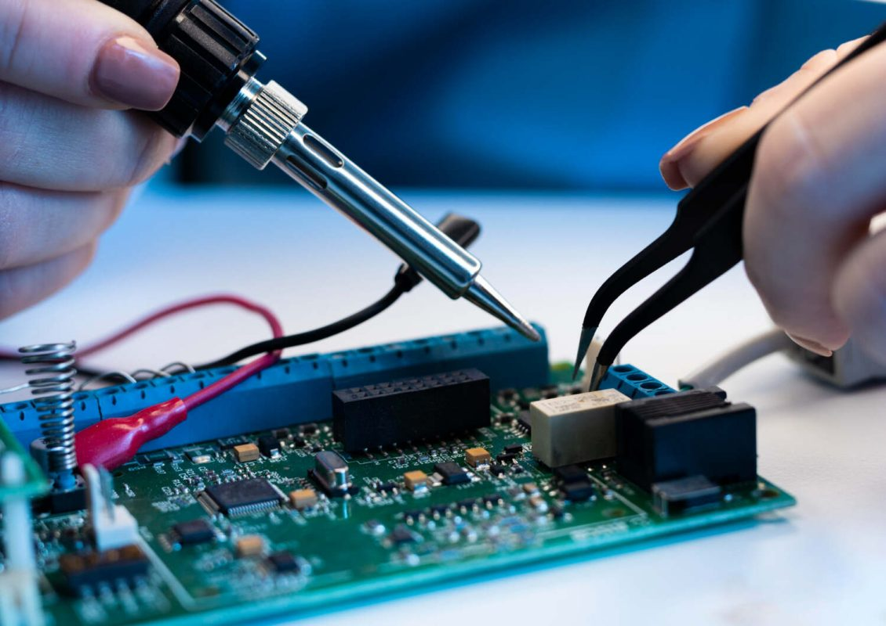
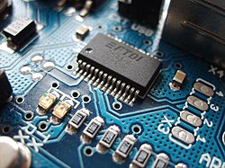
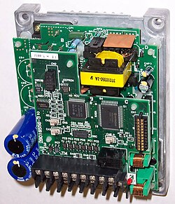
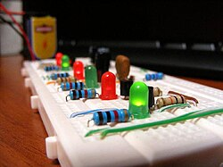

La electrónica es una rama de la física aplicada que comprende la física, la ingeniería, la tecnología y las aplicaciones que tratan con la emisión, el flujo y el control de los electrones u otras partículas cargadas eléctricamente en el vacío y la materia. La identificación del electrón en 1897, junto con la invención del tubo de vacío, que podía amplificar y rectificar pequeñas señales eléctricas, inauguraron el campo de la electrónica y la edad del electrón.
La electrónica trata con circuitos eléctricos que involucran componentes eléctricos activos como tubos de vacío, transistores, diodos, circuitos integrados, optoelectrónica y sensores, asociados con componentes eléctricos pasivos y tecnologías de interconexión. Generalmente los dispositivos electrónicos contienen circuitos que consisten principalmente, o exclusivamente, en semiconductores activos complementados con elementos pasivos; tal circuito se describe como un circuito electrónico.


